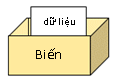

Python là một ngôn ngữ lập trình phổ biến và mạnh mẽ được sử dụng rộng rãi trong nhiều lĩnh vực khác nhau. Một trong những yếu tố quan trọng nhất trong Python là biến. Biến trong Python cho phép chúng ta lưu trữ và xử lý dữ liệu một cách dễ dàng và linh hoạt. Trong bài viết này, chúng ta sẽ tìm hiểu về biến trong Python, cách khai báo biến, kiểu dữ liệu và cách sử dụng biến trong ngôn ngữ này.
Biến trong python là gì
Có hai trường phái định nghĩa biến trong python như sau:
Trường phái đầu tiên coi biến trong python giống như một cái hộp để lưu trữ dữ liệu. Các dữ liệu này có thể là số hoặc chuỗi mà bạn có thể ưu trữ vào biến và sử dụng nhiều lần. Kết quả của các phép xử lý như tính toán giá trị số, chỉnh sửa chuỗi ký tự sẽ tạm thời được giữ vào biến và dùng để sử dụng cho chương trình sau này.

Trường phái thứ hai coi biến trong python giống như thẻ ghi địa chỉ của dữ liệu. Các dữ liệu được lưu giữ tại các vị trí riêng biệt trong bộ nhớ với địa chỉ khác nhau, và biến trong python là thẻ dùng để ghi địa chỉ của dữ liệu đó trong bộ nhớ. Khi sử dụng dữ liệu, chúng ta sẽ truy cập vào địa chỉ được ghi trên biến của dữ liệu đó.
Bạn cũng không cần quá chú ý trường phái nào đúng, chỉ cần ghi nhớ khái niệm biến trong python bằng một trong hai cách trên là được.
Khai báo biến
Trong Python, bạn có thể khai báo một biến bằng cách sử dụng dấu bằng (=). Ví dụ:
x = 5 |
Trong ví dụ trên, chúng ta đã khai báo hai biến: x và name. Biến x lưu trữ một số nguyên 5, trong khi biến name lưu trữ một chuỗi “John”.
Python là một ngôn ngữ động kiểu, điều này có nghĩa rằng bạn không cần chỉ định kiểu dữ liệu khi khai báo biến. Python tự động xác định kiểu dữ liệu của biến dựa trên giá trị bạn gán cho nó.
Kiểu dữ liệu của biến
Python hỗ trợ nhiều kiểu dữ liệu khác nhau, bao gồm:
- Kiểu số nguyên (int): Ví dụ: 5, -3, 100
- Kiểu số thực (float): Ví dụ: 3.14, -0.5, 2.0
- Kiểu chuỗi (str): Ví dụ: “Hello, World!”, ‘Python’
- Kiểu danh sách (list): Ví dụ: [1, 2, 3], [‘apple’, ‘banana’, ‘cherry’]
- Kiểu tuple: Ví dụ: (1, 2, 3), (‘red’, ‘green’, ‘blue’)
- Kiểu từ điển (dict): Ví dụ: {‘name’: ‘John’, ‘age’: 30}
- Kiểu tập hợp (set): Ví dụ: {1, 2, 3}
Mỗi kiểu dữ liệu có các phép toán và tính chất riêng, và bạn có thể chuyển đổi giữa chúng khi cần thiết.
Sử dụng biến
Biến trong Python có thể được sử dụng để thực hiện các phép tính và thao tác với dữ liệu. Ví dụ:
x = 5 |
Trong ví dụ trên, chúng ta đã sử dụng biến x và y để tính tổng của chúng và lưu kết quả vào biến sum.
Ngoài ra, bạn có thể thực hiện các phép toán khác như trừ, nhân, chia và nhiều phép toán khác bằng cách sử dụng biến.
Sự thay đổi giá trị biến
Trong Python, bạn có thể thay đổi giá trị của một biến bằng cách gán giá trị mới cho nó. Ví dụ:
x = 5 |
Sau đoạn mã này, biến x sẽ có giá trị là 6. Bạn cũng có thể sử dụng các toán tử ngắn gọn để thay đổi giá trị của biến, ví dụ:
x = 5 |
Quy tắc đặt tên biến trong Python
Để đặt tên cho biến trong python, chúng ta cần tuân theo Quy tắc đặt tên biến trong Python như dưới đây:
- Các ký tự có thể được sử dụng để đặt tên cho biến trong python là
a đến z,A đến Z,0 đến 9, gạch dưới_, chữ hán tự , tiếng việt có dấu v.v. - Không thể sử dụng các giá trị số (0 đến 9) cho ký tự đầu tiên.
- Có thể sử dụng gạch dưới cho ký tự đầu tiên. Tuy nhiên vì gạch dưới thường được sử dụng trong các trường hợp đặc biệt, nên tốt hơn là không sử dụng nó.
- Phân biệt chữ hoa chữ thường khi đặt tên cho biến trong python
- Không thể sử dụng các từ khóa của Python.
Chúng ta sẽ cùng tìm hiểu chi tiết về các Quy tắc đặt tên biến trong Python ở bảng trên như sau.
Dùng ký tự alphabet, chữ số, gạch dưới để đặt tên biến trong Python
Từ Python 3 trở đi, chúng ta có thể dùng chữ hán tự và tiếng Việt có dấu để Đặt tên cho biến trong python, tuy nhiên Kiyoshi không khuyến khích bạn dùng cách này.
tên = "Kiyoshi" |
Không dùng các giá trị số cho ký tự đầu tiên của biến
Chúng ta không thể sử dụng các giá trị số cho ký tự đầu tiên của biến trong python, bởi vì lỗi SyntaxError sẽ xuất hiện.
7up = 100 |
Lỗi SyntaxError:
File "Main.py", line 1 |
Phân biệt chữ hoa chữ thường khi đặt tên biến trong Python
Phân biệt chữ hoa chữ thường khi Đặt tên cho biến trong python. Ví dụ hai biến trong ví dụ dưới đây là khác nhau và cho ra kết quả cũng khác nhau:
str = "Tôi yêu" |
Không dùng các từ khóa của Python để đặt tên biến trong python
Chúng ta Không thể sử dụng các từ khóa của Python để đặt tên biến trong python. Các từ khóa (keyword) là các từ chỉ dành riêng cho Python và bạn không thể dùng chúng để đặt tên biến được.
Bạn có thể kiểm tra Danh sách các từ khóa trong python bằng câu lệnh dưới đây.
import sys |
Và đây là bảng các từ khóa trong python.
False await else import pass |
Nếu bạn dùng các từ khóa trong python ở bảng trên để đặt tên biến trong Python thì lỗi SyntaxError sẽ trả về như ví dụ sau:
from = "Việt Nam" |
Lỗi SyntaxError:
File "Main.py", line 1 |
Sự cần thiết của biến trong Python
Ví dụ dưới đây, chúng ta viết một chương trình tính giá (bao gồm cả thuế VAT) của các loại hoa quả và in ra màn hình.
print ("Giá cam " + str (120 * 1.1)) |
Nếu như lần nào chúng ta cũng khai thuế VAT như trên thì có thể bị nhầm lẫn do bất cẩn, hoặc trong trường hợp thuế VAT được nhà nước điều chỉnh thì chúng ta phải sửa lại toàn bộ. Như vậy rất là dễ nhầm và mất công nữa.
Thay vì đó, chúng ta sẽ sử dụng biến trong python bằng cách tạo ra một biến tax, sau đó lưu trữ giá trị thuế VAT 1.1 vào. Khi sử dụng, chúng ta chỉ cần gọi tên biến tax ra như dưới đây:
tax = 1.1 |
Cả hai cách viết ở trên đều đưa ra kết quả giống nhau:
Giá cam 132.0 |
Giả sử nhà nước đã nâng mức thuế VAT lên thành 1.5 lần, khi đó đơn giản chỉ cần thay đổi giá trị của tax thành 1.5 mà thôi:
tax = 1.5 |
Từ ví dụ trên, bạn có thể thấy việc sử dụng biến trong python sẽ giúp chúng ta giảm thiểu lỗi sai so với việc nhập trực tiếp giá trị, cũng như giúp thay đổi giá trị của dữ liệu trong chương trình nhanh chóng và hiệu quả hơn.
Giống như trên, biến đóng vai trò quan trọng trong việc lưu trữ và quản lý dữ liệu trong Python. Chúng giúp bạn lưu trữ kết quả của các phép toán, theo dõi thông tin và thực hiện nhiều nhiệm vụ khác. Chẳng hạn, trong lập trình, bạn có thể sử dụng biến để lưu trữ thông tin người dùng, kết quả tính toán, và nhiều thông tin khác.
Một ví dụ cụ thể có thể là việc tính toán diện tích hình tròn:
radius = 5 |
Trong đoạn mã trên, biến radius và pi lưu trữ bán kính và giá trị của pi, và biến area lưu trữ diện tích hình tròn.
Tổng kết
Trên đây Kiyoshi đã giải thích khái niệm biến trong python là gì, cách đặt tên cho biến trong python cũng như cách sử dụng biến trong python rồi. Để nắm rõ nội dung bài học hơn, bạn hãy thực hành viết lại các ví dụ của ngày hôm nay nhé.
Và hãy cùng tìm hiểu những kiến thức sâu hơn về python trong các bài học tiếp theo.
URL Link
HOME › python cơ bản - lập trình python cho người mới bắt đầu>>06. biến trong python